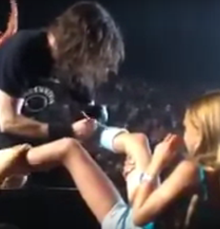
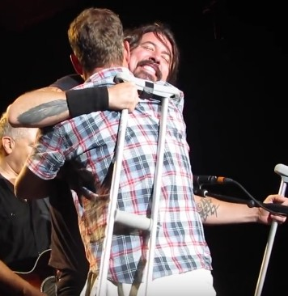

A page dedicated to David Eric "Dave" Grohl, also known as Davy Grolton, The Nicest Man In Rock, The Nicest Guy In Music, famous for being the drummer in every band (including Scream, Nirvana, Tenacious D, Queens of the Stone Age, Them Crooked Vultures), frontman of the Foo Fighters, director of Sound City and Sonic Highways.
He has collaborated with every musician and band, including but not limited to Tom Petty, Tony Iommi, Nine Inch Nails, The Prodigy, Slash, Lemmy, Corey Taylor, Zac Brown, RDGLDGRN. Does not know how to read sheet music and writes his music only by ear, caffeine addict, owns the key to the city of Warren, Ohio(which also dedicated a roadway and two gigantic 902 lb (409 kg) drumsticks to him).
Recent News
Foo Fighters to play for fans in Italy.

Oct 25,2015 Foo Fighters lovers in Italy who banded together to perform an impressive rendition of the song "Learn to Fly" featuring 1,000 musicians will finally get their wish.
Lead singer Dave Grohl announced Thursday that the band will play a show on November 3 at the Carisport venue in Cesena -- bringing to reality a dream that organizer Fabio Zaffagnini set in motion last year by putting out a call for hundreds of guitarists, drummers, bassists and singers to perform this summer in unison and film a version of the hit song.
Read More.Dave dedicates song to little girl with broken leg and signs her cast.
Sept 22,2015 Dave Grohl dedicated a song to a little girl with a broken leg at Foo Fighters' concert in Los Angeles earlier this week.
Grohl himself broke his leg earlier this year, forcing Foo Fighters to cancel their European tour including their headline Glastonbury Festival appearance.
Read More.Dave Brings Up "Crying Grown Man" From Audience to Sing "My Hero".
Aug 17,2015 Foo Fighters tend to elicit varying emotions amongst music fans. One of them is Anthony, who attended Foo Fighters’ recent gig in Greenwood Village, Colorado and began weeping uncontrollably. Anthony’s tears were prompted by the band’s acoustic rendition of "My Hero".
Read More.